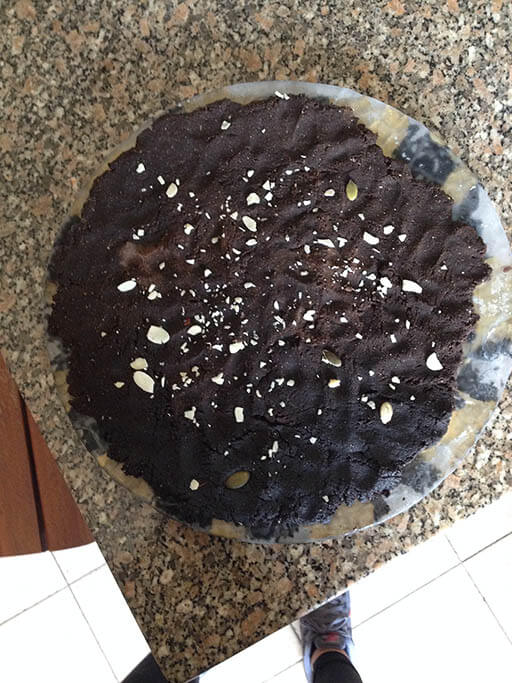

E quando dá vontade de comer qualquer coisa doce a seguir ao almoço/jantar com o cafézinho.
Aqui vai uma receita para um momento doce.
Receita:
- 3 colheres de sopa de manteiga de amendoim/amêndoa (usei de amendoa)
- 60g de farinha de alfarroba
- 2 Colheres de Sopa de mel
- 60g de amêndoas ou outro fruto seco à escolha
- 4 colheres de sopa de bebida de amêndoa, ou arroz ou leite
Colocar os ingredientes numa trituradora e depois colocar numa travessa ou fazer bolinhas. Fiz numa travessa por uma questão de logística do congelador. De seguida colocar tudo no congelador durante 2 horas.
Cortar em bocadinhos e guardar. É servido sempre frio!
P.S – Não comer tudo de uma vez!
